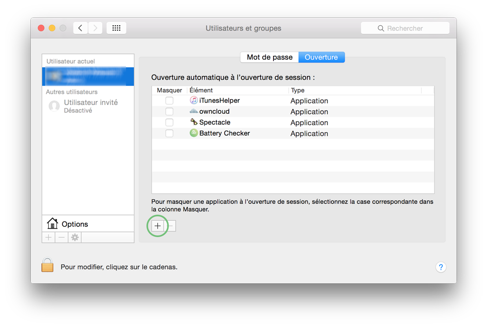
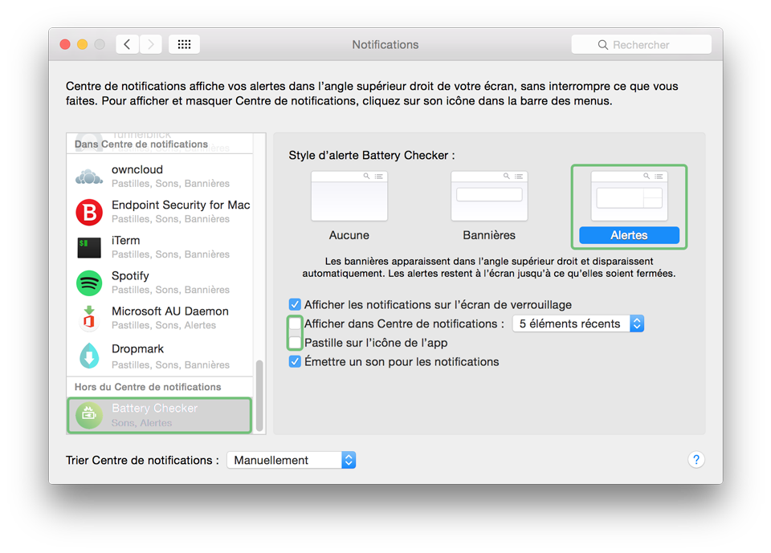

Installation :
-
Télécharger et ouvrir « BatteryChecker.dmg »
-
Déplacer l'app « Battery Checker» dans le dossier « Applications »
-
Double cliquer sur l'app (rien de visuel n'indiquera son lancement)
-
Aller dans :
> Préférences Système > Utilisateur et Groupes > Ouverture
Cliquer sur le + pour ajouter l'application
 -
Aller dans :
> Préférences Système > Notifications
Selectionner « Battery Checker »
Passer de « Bannière » à « Alerte »
Décocher « Afficher dans Centre de notifications » et « Pastille sur l'icône de l'app »
 -
C'est fini ! L'application se lancera au démarrage et la notification restera visible pour être sûr de ne pas la louper !